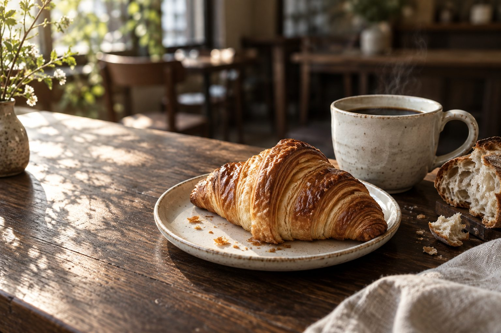
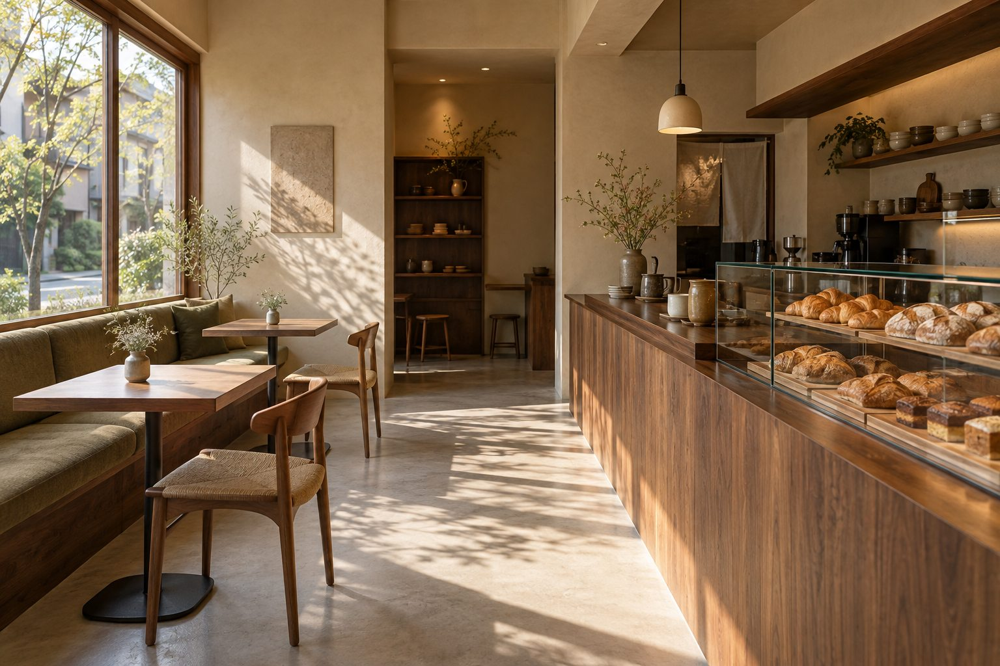

朝をゆっくり。
パンを選ぶ時間から、
朝を少しゆっくりと。

01 / OUR STORY
扉を開けると、パンの香り。
席につくと、コーヒーの湯気。
それだけで、少し気持ちがほどけていく。
忙しい朝にも、予定のない午後にも。
暮らしの途中で立ち寄りたくなる、
そんな場所を思い描きました。

02 / BREAD & COFFEE
パンの香ばしさも、コーヒーの余韻も。写真から選ぶ、ひと休み。
THE PERFECT LITTLE PAIR
ぱりっとしたクロワッサンに、
温かなコーヒーをひと口。
それぞれのおいしさが引き立つ、
お気に入りの組み合わせを。
03 / YOUR LITTLE PAUSE
パンを選ぶ時間から、
朝を少しゆっくりと。
ひとりで本を開く日も、
誰かと話が弾む日も。
気になったパンを、
明日の楽しみにするのも。
楽しみ方の提案例です。実際の営業時間・設備・テイクアウト対応は、本制作時に確認して掲載します。
04 / FROM THE COUNTER
05 / COME SAY HELLO
お出かけ前に、店舗情報をご確認ください。
本デモの営業日時・所在地は未設定です。